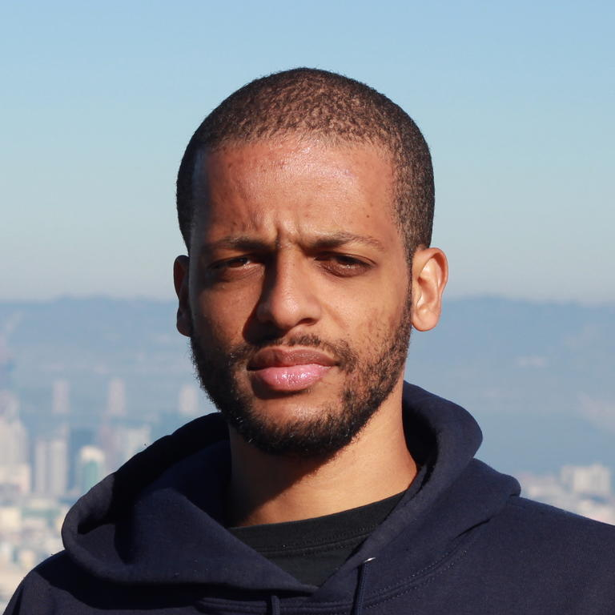

Jelani Nelson
Professor, Department of EECS, at UC BerkeleyAbout
Jelani Osei Nelson is a Professor of Electrical Engineering and Computer science at the University of California, Berkeley.early life and education
born to an Ethiopian mother and African-American father in LA, studied mathematics and Computer Science at MIT, continued to pursue his doctoral studies in Computer Science, was a member of theory of computation group.Career
interested in bigdata and the development of efficient alogorithms, was at the Computer Science faculty at Harvard University before joining UC Berkeley in 2019, known for his contributions to streaming alogorithms and dimensionality.Awards and honours
- 2017 Presidential Early Career Award for Scientists and Engineers
- 2017 Alfred P.Solan Research Fellowship
- 2011 George M. Sprowls Award for Outstanding Doctoral Thesis
- 2011 IBM Research Pat Goldberg Memorial Best Paper Award
AddisCoder
Nelson founded the AddisCoder program in 2011 whilst finishing his PhD at MIT.AddisCoder is a summer program teaching computer science and algorithms to high schoolers in Ethiopia. The program has trained over 500 alumni so far, and most of them are successful in their life right now.